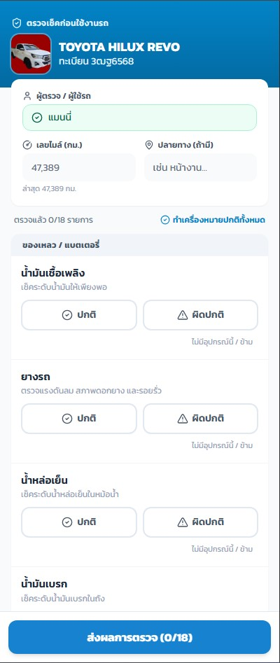
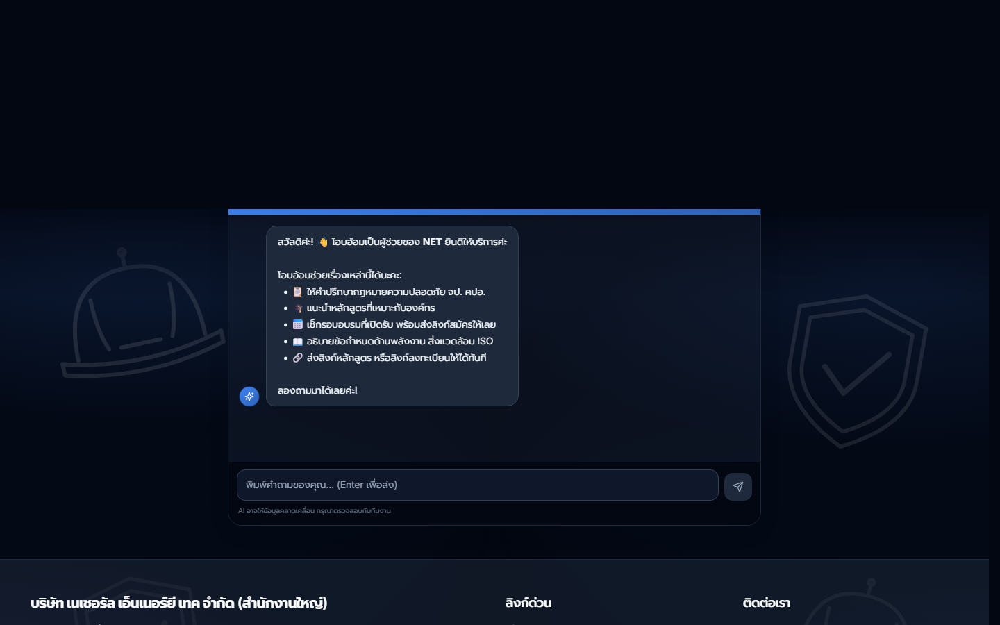

Progress Report
สรุปผลงานรอบ 5 สัปดาห์
รอบนี้เป็นรอบลงลึก ไม่ใช่รอบเปิดของใหม่ — ทุ่มกำลังไปที่ ความปลอดภัยข้อมูลส่วนบุคคลและการกู้ข้อมูลผู้อบรมของ CP Safety Passport พร้อมยกเครื่องผู้ช่วย AI หน้าเว็บ รวมทั้งหมด 108 งานพัฒนา ใน 5 โปรเจกต์
Agenda · หัวข้อวันนี้
ภาพรวมรอบนี้
เลขบัตรประชาชนไม่ถูกเก็บเต็มใบอีกต่อไป
ยกเครื่อง CP Passport ให้เก็บแค่ 10 หลักท้าย + รหัสเข้ารหัสทางเดียว ใช้ยืนยันตัวคนได้เหมือนเดิมแต่ย้อนกลับเป็นเลขจริงไม่ได้ ปิดช่องรูปถ่าย/ไฟล์แนบที่เคยตั้งชื่อด้วยเลขบัตร ผ่านการตรวจ 4 รอบและมีเทสต์อัตโนมัติ ~665 รายการคุมไว้
แก้ปัญหาลูกค้าโทรมาบอก "ค้นหาบัตรไม่เจอ"
ไล่หาต้นเหตุจนพบว่ามีคน 1,364 คน ที่มองไม่เห็นบนหน้าตรวจสอบบัตร — กู้กลับมาได้ 1,164 คน (อีก 200 ถูกซ่อนถูกต้องแล้ว) พร้อมล้างบัตรซ้ำ 1,112 ใบ และเปลี่ยนวิธีค้นชื่อใหม่ให้พิมพ์บางส่วนหรือสลับชื่อ-นามสกุลก็เจอ
ผู้ช่วย AI หน้าเว็บ + สิทธิ์เข้าถึงใน NETMER
"โอบอ้อม" เดิมตอบคำถามลูกค้าถูกแค่ 3 จาก 71 คำถาม — รอบนี้รื้อใหม่ทั้งชุดพร้อมแก้ฐานความรู้กฎหมาย 68 จุด · ฝั่ง NETMER-Flow เปลี่ยนจาก "ซ่อนเมนู" มาเป็นบังคับสิทธิ์จริง พร้อมแก้บั๊กที่ตรวจเจอ 16 จุด
Systems Overview — คลิกการ์ดเพื่อดูรายละเอียด
System Integration · ระบบคุยกันเองแบบ real-time
งานใหญ่รอบนี้ · CP Safety Passport
เก็บเลขบัตรประชาชนแบบย้อนกลับไม่ได้
เก็บแค่ 10 หลักท้าย คู่กับรหัสเข้ารหัสทางเดียว — ยังเช็คได้ว่าเป็นคนเดียวกันไหม แต่ถอดกลับเป็นเลขจริงไม่ได้ · ปิดช่องรูปถ่าย/ใบรับรองที่เคยตั้งชื่อไฟล์ด้วยเลขบัตร
ค้นชื่อใหม่ — พิมพ์บางส่วนก็เจอ
รองรับพิมพ์ไม่ครบ สลับชื่อ-นามสกุล มีคำนำหน้า หรือมีช่องว่างเกิน · ของเดิมต้องพิมพ์ตรงเป๊ะทุกตัวอักษรถึงจะเจอ
วางกติกาบัตรให้ชัด
บัตรใบเดียวใช้ได้ทั้งพนักงาน + ผู้รับเหมา แต่เทรนเนอร์ต้องแยก · บัตรและโมดูลเทรนเนอร์มีอายุ 5 ปีชัดเจน (เดิมระบบขัดกันเอง)
ผลที่ลูกค้าและทีมได้รับ ขึ้นระบบแล้ว
NETMER-Flow · คุมสิทธิ์จริง + ศูนย์แจ้งปัญหา

ของเดิมถามคนขับเรื่องที่คนขับตอบไม่ได้ (น้ำหล่อเย็น น้ำมันเบรก แบตเตอรี่) — ตัดออกเหลือ 14 ข้อ แล้วย้ายไปอยู่ในรอบตรวจของผู้ดูแลรถ 28 ข้อ พร้อมบันทึกค่าที่วัดได้ เช่น ลมยาง แรงดันแบต เพื่อดูแนวโน้มย้อนหลัง
คุมสิทธิ์เข้าถึงจริง ไม่ใช่แค่ซ่อนเมนู
เดิมแค่ซ่อนเมนู แต่ข้อมูลยังเปิดอยู่ · รอบนี้ล็อกที่ตัวฐานข้อมูลและ API จริง พร้อมแก้บั๊กที่ตรวจเจอ 16 จุด — จุดใหญ่สุดคือการสร้างพนักงานใหม่เคยทำให้แอดมินหลุดออกจากระบบ
ศูนย์แจ้งปัญหา — IT / รถ / อาคาร
แจ้งปัญหาเมนูเดียวจบ เลือกหมวดแล้วกดรูป กดชิป ไม่ต้องพิมพ์เยอะ · ปัญหารถที่แจ้งเข้ามาไปโผล่ในไทม์ไลน์ของรถคันนั้นเองอัตโนมัติ
รายงานผลการปฏิบัติงานที่เชื่อถือได้
รายงานเดิมนับผิด — วิทยากรที่สอนหนัก 36–43 วันกลับได้คะแนนแย่สุด · รอบนี้เปลี่ยนมาวัดจากหลักฐานจริง เทียบกับเวลาทำงานจริง (หักวันหยุด/วันลา) และเทียบเฉพาะในกลุ่มงานเดียวกัน + ออกไฟล์ Excel 9 ชีตพร้อมวิธีคิด
LINE เบิกของ เลิกสแปม
เดิมส่งซ้ำ 2 รอบและยิงทีละชิ้น · ตอนนี้ส่งเข้ากลุ่มเดียวและรวมคำขอในช่วง ~3 นาทีเป็นข้อความเดียว
เว็บไซต์หลัก + ผู้ช่วย AI "โอบอ้อม"

ปัญหาที่เจอเช่น คุยเกิน 10 คำถามแล้วบอตพังโดยระบบยังบันทึกว่า "สำเร็จ", ตอบว่า "ยังไม่มีรอบ" ทั้งที่มีรอบอยู่ (เพราะเทียบชื่อหลักสูตรแบบลูกค้าพูดไม่ได้) และเผลอโชว์หลักสูตรที่ตั้งใจซ่อนไว้
แก้ฐานความรู้กฎหมาย 68 จุด
ตรวจข้อความกฎหมาย 122 ข้อกับตัวบทจริงทีละข้อ · ตัวอย่างที่แก้: การอบรมดับเพลิงไม่ได้บังคับเฉพาะที่มีลูกจ้าง 10 คนขึ้นไป — ของเดิมทำให้เราตอบลูกค้ารายเล็กผิด
เว็บโหลดไวขึ้น
ย่อรูปบนเว็บจาก 120 MB เหลือ 7.4 MB (โลโก้ลูกค้าเคยเป็นไฟล์ 6,250 พิกเซลในกรอบ 130 พิกเซล) และแก้อาการหน้าขาวตอนโหลด
จัดระบบหน้าตาเว็บใหม่
รวมการ์ด 4 แบบให้เหลือแบบเดียว ลดสีที่ใช้เหลือ 5 สีที่มีความหมาย และเพิ่มการตอบสนองเวลากดบนมือถือ (เดิมกดแล้วไม่มีอะไรเกิดขึ้น)
Online Inspector: เพิ่มระดับ OFI
เพิ่ม "ข้อเสนอแนะ (OFI)" เป็นระดับที่ 3 ที่ไม่นับเป็นข้อบกพร่อง ตามกระบวนการใหม่ของลูกค้า + ปรับข้อมูลผลตรวจ 603 รายการให้ตรงกับไฟล์ต้นทาง
SEO & AI Search
Top Keywords · คำค้นที่พาคนเข้าเว็บ 1,000+ คำค้นหา
ผู้เข้าชมแยกตามอุปกรณ์ 2,231 clicks
ยอดเข้าใช้เว็บไซต์จริง
หน้าที่คนเข้าชมมากที่สุด 30 วันล่าสุด
ช่องทางที่พาคนเข้ามา External · 30 วัน
ไล่งานทีละสัปดาห์
ขอบคุณครับ
มีคำถามหรืออยากดูตรงไหนแบบเจาะลึก บอกได้เลยครับ